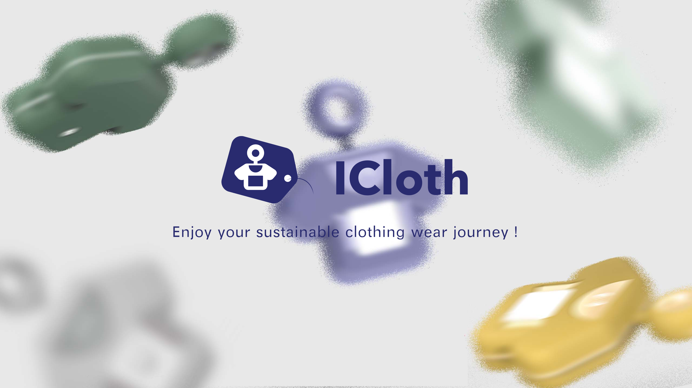
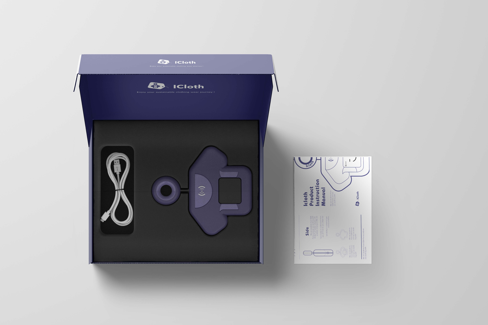
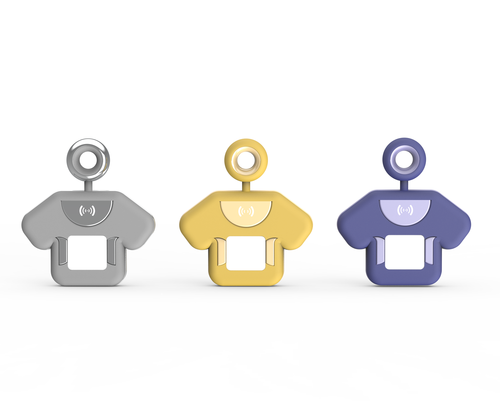

ICloth -
服装业中的可持续设计




Back To Project
项目时间
2022.03 - 2022.04
团队成员
Shiyi Fang
Leixi Chen
Qin Li
Yuxuan Liang
Sushmita Joshi
Leixi Chen
Qin Li
Yuxuan Liang
Sushmita Joshi
软件及工具
Figma
Miro
Illustrator,Photoshop
Rhino 7, KeyShot 10
Arduino
Miro
Illustrator,Photoshop
Rhino 7, KeyShot 10
Arduino
该项目为小组项目，并与可持续慈善机构Waste Zero Scotland 和慈善基金会Findhorn 进行调研合作。
针对联合国第12个可持续发展目标“负责任的消费与生产“，该项目提出了指导性的互动工具包ICloth，作为鼓励那些在服装方面有可持续发展动机的消费者采取行动的潜在解决方案。该工具包帮助人们发展 "生命周期思维"，以加强对服装资源的可持续管理；它还旨在通过一系列的干预措施来降低学习成本，促进消费者在生活的各个阶段正确对待服装习惯和常规，以延长服装的寿命和耐久性。我们支持每一位消费者产生影响，成为苏格兰地区“从线性经济向循环经济的系统性转变”的有力推动者。
针对联合国第12个可持续发展目标“负责任的消费与生产“，该项目提出了指导性的互动工具包ICloth，作为鼓励那些在服装方面有可持续发展动机的消费者采取行动的潜在解决方案。该工具包帮助人们发展 "生命周期思维"，以加强对服装资源的可持续管理；它还旨在通过一系列的干预措施来降低学习成本，促进消费者在生活的各个阶段正确对待服装习惯和常规，以延长服装的寿命和耐久性。我们支持每一位消费者产生影响，成为苏格兰地区“从线性经济向循环经济的系统性转变”的有力推动者。


©ShiyiFang 2022